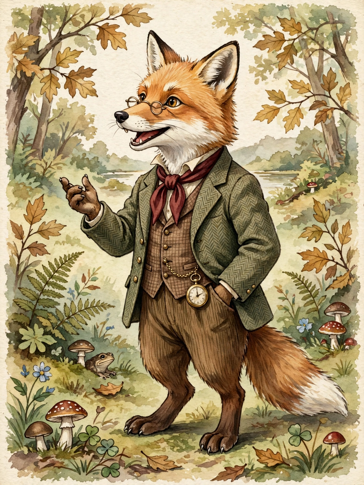

Anthropomorphism is the attribution of human traits, emotions, or intentions to non-human entities, including animals, plants, natural phenomena, objects, and deities. The word derives from the Greek anthrōpos ("human") and morphē ("form"). It is considered an innate tendency of human psychology.
Many religions conceive of gods in human form and with human motivations — the gods of Greek mythology being a prominent example. The Greek philosopher Xenophanes already noted in the 6th century BC that people fashion gods in their own image: Ethiopian gods were depicted dark-skinned, Thracian gods blue-eyed and red-haired. Several traditions, including Judaism, Islam, and some strands of Christianity, have criticized or prohibited anthropomorphic depictions of the divine.
Anthropomorphic animals are a staple of fable (Aesop's Fables), children's literature (Beatrix Potter, The Wind in the Willows), and animation, where they serve moral instruction, satire, and storytelling. Personification — treating abstractions such as Death or Justice as human figures — is a related literary device.
Psychologists describe anthropomorphism as a default strategy for making sense of non-human agents, linked to theory of mind. In science it is usually avoided as a source of error (for example, attributing intentions to evolution), though it can be a useful heuristic in fields such as animal behaviour and human–computer interaction; people readily treat computers, robots, and vehicles as social actors.